Main Features
Symbology
| map type | name | data type | polygon | point | line | deprecated |
|---|---|---|---|---|---|---|
| Base Map | tc_map() |
geometry | 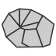 | - | ||
| Proportional Symbols | tc_map_p() |
stock | 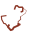 | propSymbolsLayer() |
||
| Typology | tc_map_t() |
category | 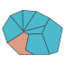 | 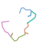 | typoLayer() |
|
| Choropleth | tc_map_c() |
ratio | 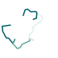 | choroLayer() |
||
| Symbols | tc_map_s() |
category | - | |||
| Graduated Symbols | tc_map_g() |
stock | 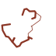 | - | ||
| Proportional Symbols + Typo | tc_map_pt() |
stock & category | propSymbolsTypoLayer() |
|||
| Proportional Symbols + Choro | tc_map_pc() |
stock & ratio | propSymbolsChoroLayer() |
|||
| Symbols + Choro | tc_map_sc() |
category & ratio | 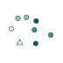 | - | ||
| Dot density | tc_map_dots() |
stock | 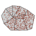 | dotDensityLayer() |
||
| Discontinuities | tc_map_disc() |
stock | ratio | discLayer() |
Map Layout
| 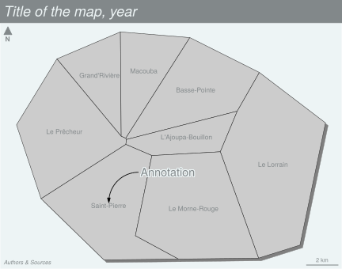 |
| name | deprecated |
|---|---|
tc_title() |
- / layoutLayer()
|
tc_arrow() |
north() |
tc_credits() |
- / layoutLayer()
|
tc_scale() |
barscale() |
tc_layout() |
layoutLayer() |
tc_annotation |
- |
tc_label() |
labelLayer() |
Themes
tc_theme() defines a map theme. It sets the margins of the figure, a background color, a foreground color and some parameters of the title. A set of theme is included in the package and it is possible to create cutom ones.
| 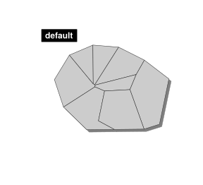 | 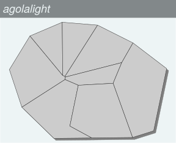 | 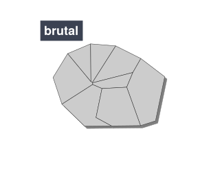 |
| 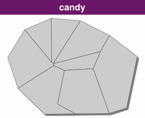 | 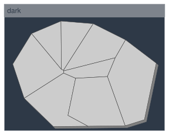 | 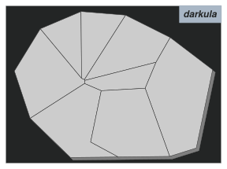 |
| 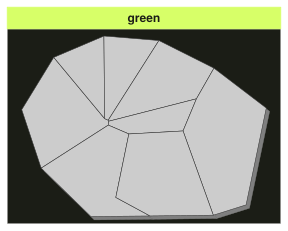 | 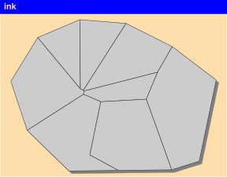 | |
| 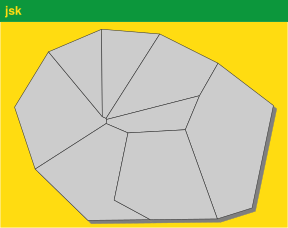 | 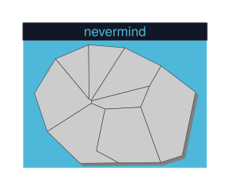 |
Export
The tc_init() function can be used to export maps in raster (.png) or vector formats (.svg). The size of the exported map will fit the height/width ratio of a spatial object.
Datasets
Several datasets are embedded in the package:
-
A GeoPackage of Martinique municipalities can be imported with
tc_import_mtq()(or viasf::st_read()).Sources: Base comparateur de territoires (upload date: 2018-09-25) & ADMIN EXPRESS-COG (2018 edition).
Citation: Insee and IGN, 2018
-
Fields:
- INSEE_COM: Municipality identifier
- STATUS: Municipality administrative status
- LIBGEO: Municipality name
- POP: Total population, 2015
- MED: Median disposable income adjusted per equivalent household member, in euros, 2015
- CHOM: Unemployed population, 2015
- ACT: Active population, 2015
-
A csv file of professional mobility flows between Martinique municipalities.
Sources: Flux de mobilité - déplacements domicile-lieu de travail (upload date: 2018-08-01)
Citation: Insee, 2018
-
Fields:
- i: Municipality of residence identifier
- j: Municipality of workplace identifier
- fij: Flows of workers (employed population, 15 y.o. or more, 2015, only flows > 100)
- sj: Administrative status of the workplace municipality